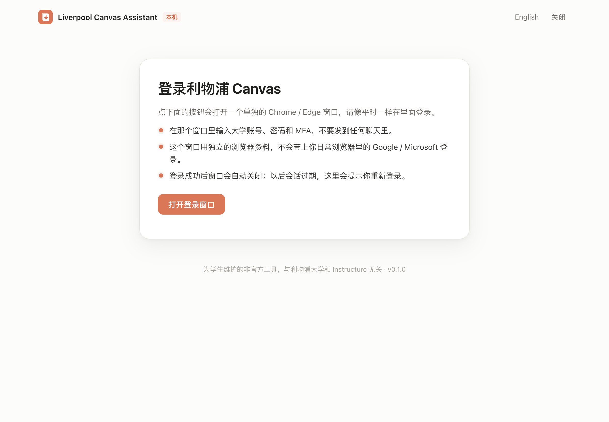
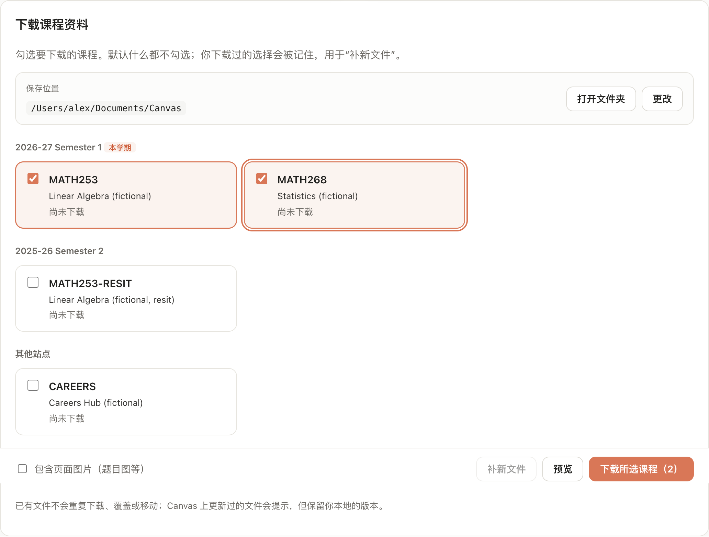
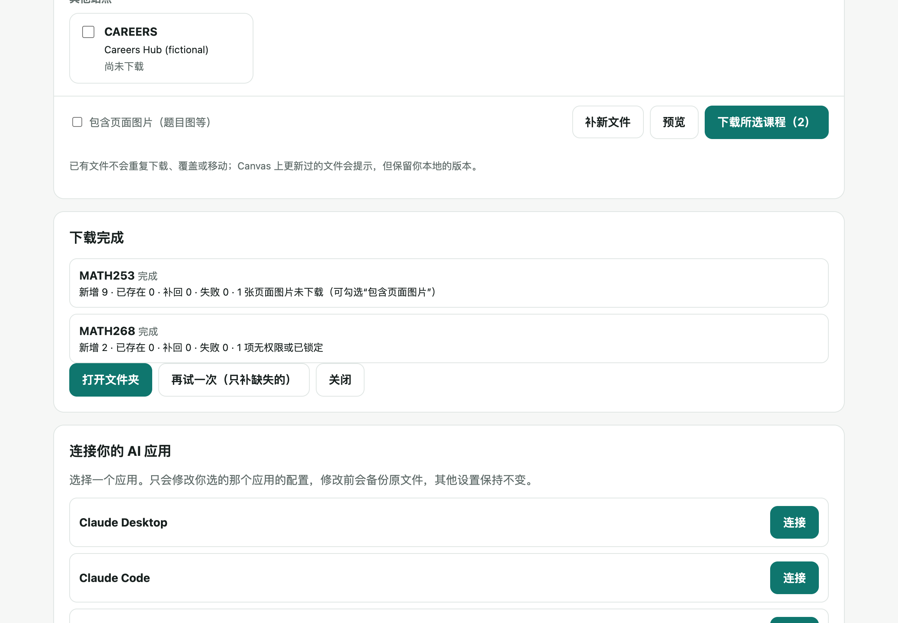

Documents/Canvas/
├── MATH253 (2026-27 Semester 1)/
│ ├── Week 1/
│ │ ├── Week 1 slides.pdf
│ │ └── Problem sheet 1.pdf
│ ├── Announcements/
│ └── Assignments/
└── MATH268 (2026-27 Semester 1)/
└── Lectures/

node -v